|
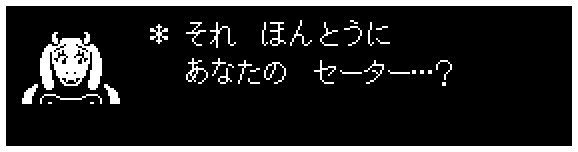 |
こんにちは！トビー・フォックスです。 |
|
「UNDERTALE/DELTARUNE通信」、記念すべき第1号が配信されました！ いわゆる「ニュースレター」ってやつですけど、今回は特に新しいお知らせはないので、どっちかというと「“オールド”スレター」ですね… |
でも、お知らせが少ないぶん、ここでしか読めないどうでもいいことをわんさか詰め込もうと思ってるので、ちゃんと読んでくださいね！ |
それではさっそく…まずは、今年一年を振り返ってみましょう。 |
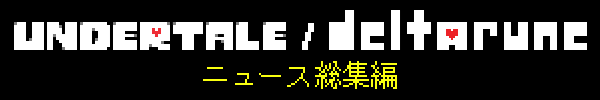 |
今から3か月ぐらい前に、『DELTARUNE』のChapter 3と4の開発進捗をまとめた簡単なレポートを公開しました。Chapter 2未プレイの方は、ネタバレがあるかもしれないので注意してくださいね。 |
あれから開発は滞りなく進んでいて、Chapter 3の一部の要素は、完成が見えてきた感じです。Chapter 3に関しては、当初4つの何かと3つ(あるいは6つ?）のべつの何かを入れるつもりだったんですが、4つの何かを3.5に減らして、またべつの何かの3つめをリファクタリングして短くして、もうちょっと何かっぽくなくしつつ、（何か, 何か）の記述の部分はキープして…的な何かをしました。いずれにせよ、今後は一切、何かはしないと心に決めました！ |
|
毎年『UNDERTALE』のリリース記念日の時期には、スペシャルイベント的なものを企画しています。これまでもコンサートの録画映像を流したり、生配信をしたりしてきましたが、今年は「Child's Play」というチャリティ団体への募金を募る抽選・オークションイベントを開催しました。子どもたちへの募金を集めるのにふさわしいキャラクターといったら、“あの人”しかいませんよね… 『DELTARUNE Chapter 2』に登場したうさんくさいカネの亡者、「スパムトン」！ イベント自体は終わりましたが、特設サイトは残してあります。サイトと[[業火賞品]]の数々をまだ見てない人は、ぜひチェックすることをおすすめします。“一風変わった”賞品を1つひとつスパムトンが説明してくれていて、ページをじっくり調べれば、いろんな隠し要素も見つかるかも…？サイトをチェックし終えたら、「ｽﾍﾟｼﾙなスパムトン」が当選者を発表するフィナーレの動画を見るのもお忘れなく！ |
じつは今回の「スパムトン・ステークス」、みなさんの募金のしかたに合わせて2つの「エンディング」を用意していました。今回お見せできたエンディングのほうがおもしろかった気がしますけど、来年、どこかのタイミングでもうひとつのエンディングも公開して、制作舞台裏のお話なんかもできたらいいなと思ってます！ |
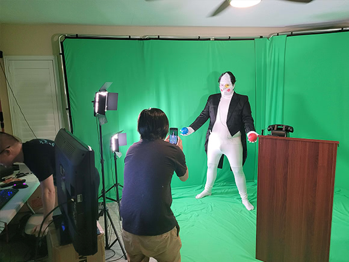 |
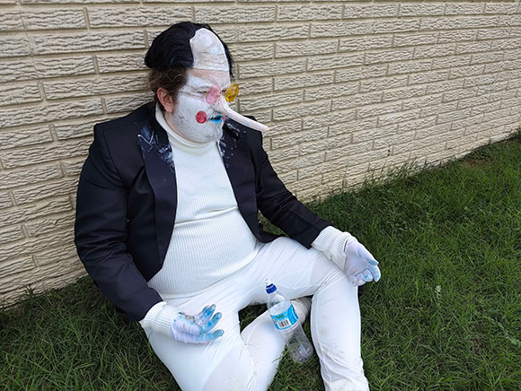 |
去年あったことで思い出せるのは、そんなところですね。 |
![Page one of two. Three panels. First panel shows Papyrus in a holiday sweater, exclaiming 'WELCOME TO PAPYRUS'S NEWSLETTER!'. Second panel shows Papyrus holding a scarf, saying 'HERE I WILL TALK ABOUT MY NEW SWEATER, MY NEW SLEDDER, AND IF TIME PERMITS, MY...'. Third panel shows Papyrus upset, as many characters from Snowdin appear. Snow dogs ask 'New petter!?', Alphys asks 'M...Mew getter?', Grillby asks 'Brew setter?', Tsunderplane asks 'N-new jetter!?', Napstablook asks '...new better...?', Undyne doesn't get it and asks 'SNOW WRESTLING!?'](../../list_48/campaign_1/comic1-full-jp.png) |
![Page two of two. Four panels. First panel shows Papyrus frustratedly shoving the Snowdin characters off-screen, saying 'NO!!! NO!!! I MEAN MY 'BLUE' 'DEBTOR' OF A BROTHER, SANS!'. Second panel shows Sans in the distance, grinning, and wearing a green sweater, while Papyrus narrows his eyes. Third panel shows Papyrus excitedly pointing and exclaiming 'THAT'S HIM!!!' as Sans waves. Fourth panel shows Mettaton EX lazing with a crown in a dog-themed chair, saying 'By the way, this newsletter is about me now.'](../../list_48/campaign_1/comic2-full-jp.png) |
 |
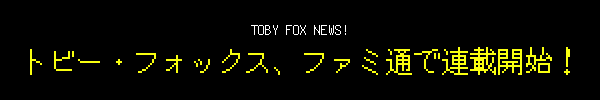 |
|
みなさんご存じのゲーム雑誌「週刊ファミ通」で、僕のコラムの連載が始まりました。 これを書いている時点で2本掲載されていて、2つともわりと地味めのトピックです… 第1回は『ときめきメモリアル』、第2回は『Secret of Evermore』について書きました。 2本ともネットで全文公開されているので、ぜひ読んでみてください！ |
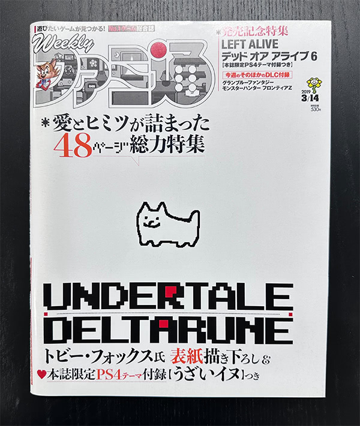 |
そうそう、僕、「週刊ファミ通」の表紙を描いたこともあるんですよ。ウソみたいなホントの話。 |
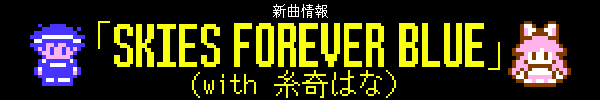 |
『UNDERTALE』の英語版をリリースしたとき、日本のRPGファンもプレイしてくれるかなあ…なんて考えたりしました。だから、リリース後の早い時期に届いたファンレターのうち、1通が日本のファンからだったとき、すごくうれしかったんです。差出人は、「糸奇はな」さんという人でした。 |
その名前には、じつは見覚えがありました。彼女がYouTubeに上げていたカービィの曲の歌アレンジを聴いたことがあったんです。友だちに「連絡してあげなよ！」って言われて、何度かメッセージをやりとりしたあと、プレゼントを贈りたいと言われたので住所を教えました。そしたら家に荷物が届いて、中身はチョコレートと手縫いのフラウィの刺しゅうでした。チョコレートは日本でしか売ってないフレーバーで、すごく…マズかったです。配達中に賞味期限が切れちゃったのかも？でもとにかく、そのときもらった刺しゅうがすごくかわいくて、今でも大事に持ってます。以来、糸奇はなさんのことはいいお友だちと思っていて、ときどき曲を共作しています。 |
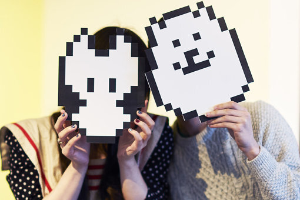 |
今回は、いっしょに「Skies Forever Blue」という曲を作りました。 |
このMVの制作は、OMOCAT, LLC.が担当してくれたんですよ。そう、『OMORI』を開発した、あの人たちです！かなり時間がない中での作業だったけど、力を合わせてモノを作れて楽しかったです。他にもたくさんの人たちが制作に協力してくれたので、クレジットをチェックしてくださいね。 |
トビー・フォックス、beatmaniaデビュー！ |
このたび、『beatmania IIDX 30』にオリジナル曲を提供させていただきました！！…はい、わかってます。「また“Blue”！？」、ですよね。僕、曲名つけるセンスはいまいちだけど、大丈夫、曲自体はだいぶいい感じです！ |
今回のコラボの作業分担は、ごくごくふつうに、僕がピアノでメロディーとコードを作曲して、残り99.9999%の作業をかめりあさんがやってくれました。完ぺきにイーブンなナイスコンビ！ |
お近くのゲーセンでこの曲をプレイするときは、ぜひ、音符は全部無視してMVに集中して観てください。ホント最高なので！かめりあさんと僕が仲よくツインビーみたいな姿で登場して、いっしょに冒険して、最後は…子どもが生まれて…？ |
僕たち2人とも、MVがどんな仕上がりになるのかまったく聞かされてなかったんですよ。もちろん、すごく気に入ってます！でも…相当ブッ飛んでますよね、これ！？ |
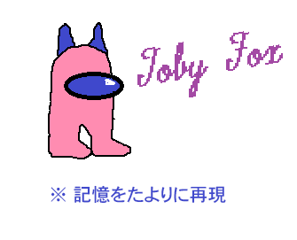 |
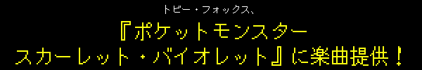 |
『ポケットモンスター スカーレット・バイオレット』が発売されました！この作品に、曲を数曲提供させていただいております。「テラレイドバトル！」と、「学校最強大会！」、そして…「戦闘！ゼロラボ」も！それから、「エリアゼロ」は、僕が作曲したものを友だちの一之瀬剛さんが再アレンジしてくれました。 |
あと、学園で流れるあの厳かな曲のメロディーも僕が作ったんですが、なんと、ゲーム中ずっと流れるフィールドのテーマにも使われることになってしまいました！とはいえ、あのメロディーをフィーチャーした曲は全部、他のすばらしいコンポーザーのみなさんが制作されたものです（僕は特に、夜に流れるソフトなピアノバージョンがお気に入りです）。僕が携わった部分は、そんなところです！ |
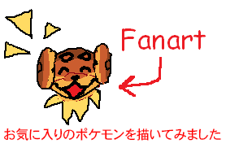 |
もうチェックしましたか？DELTARUNに登場するデヒノレのめしゝくるみ…！ |
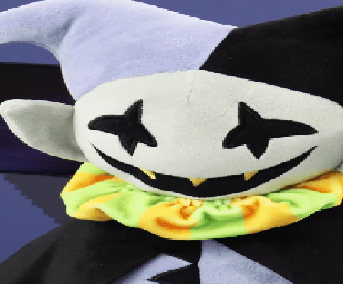 |
ご家族みんなでお楽しみいただけます |
 |
|
以上で、今季号はおしまいです！次回は春にお会いしましょう！ 次の号でも、新しくお知らせすることはあんまりないかもしれないです。そのときはまた、くだらないあれやこれやをお届けしますね。ひょっとしたら、インタビューなんかもあるかも…？ |